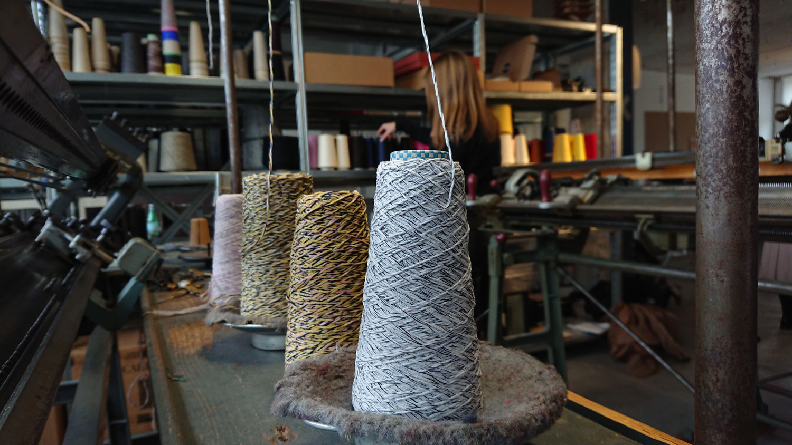
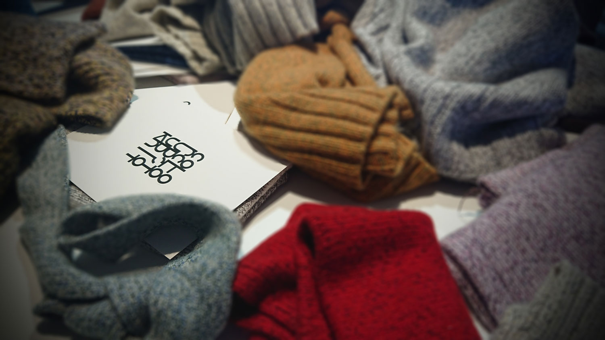
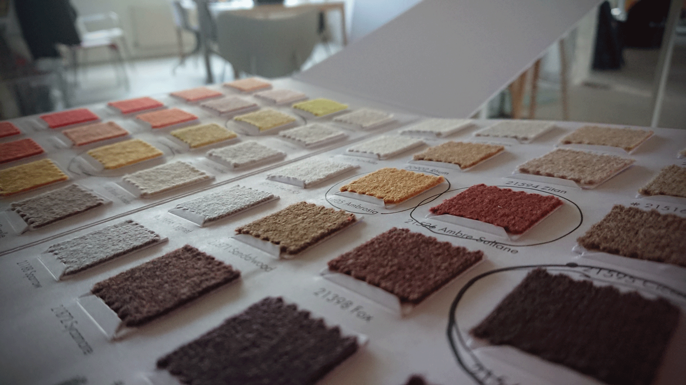

Som kunde er du med helt fra start. Det hele handler om processen, hvor dialogen med kunden er i fokus. Dialogen om model, tykkelse og farveuniverset, hvor du skal vælge kombinationen af tråde. Når du har valgt et udgangspunkt, går de i gang med at lave din prøve, samt andre prøver, hvor farvekombination afviger. Den endelige prøve vælges og inden for 14 dage har du din helt unikke striktrøje.

"Det interessante er når vi kan rykke kunden i en anden retning" siger Tommy og fortsætter med at forklare hvordan en anden farve tråd, kan have en stor påvirkning på det endelige udtryk
Man får et andet forhold til sin beklædningsgenstand, når man selv har været ind over. Det vil aldrig nogensinde blive en hyldevare og du er garanteret en trøje for livet. Dette ligger til grund for flere års research, hvor de har fået styr på de mindste detaljer i designet, undersøgt forskellige strikke- og tvisteteknikker og opnået det fulde potentiale af både cashmere-fibrene og maskinen.

" Identiteten bliver sprøjtet ud på trøjen"
Det hele startede i Berlin i 1994, hvor Tommy købte en cashmere trøje, der har holdt sig godt. Strikken er et udtryk for hvor fascinationen for cashmere opstod. Som arkitekt, har han øjne for detaljerne og det er ikke tilfældigt hvordan det ser ud.
For to år siden startede de for alvor med at lave research. De har fundet ud af balancen af antal tråde. Putter man 1 for meget, vil det være spild af garn og putter man én for lidt vil den miste fastheden. Det handler om at finde balancen.

" Cashmere har den egenskab, at den tegner kroppen "
De har Hanne ansat fuldtid som strikker. Hun kommer fra Teko i Herning og har fundet ud af hvordan hun bruger maskinen fra 1959 til at lave rundstrik på. På den måde bliver komforten bedre og der spares tid ved at undgå håndmontage.
Når de har lavet din strik gemmer de en ekstra cone, så Hanne har mulighed for at reparere strikken senere. Lige nu fokuserer de på striktrøjer, men på længere sigt kunne de godt forestille sig at lave fx slips, huer og andre accessories.